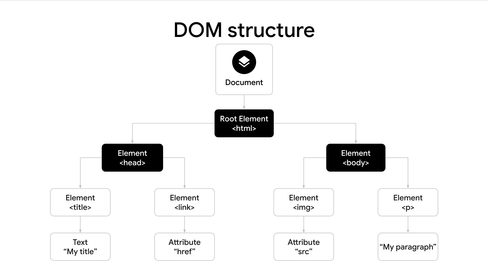
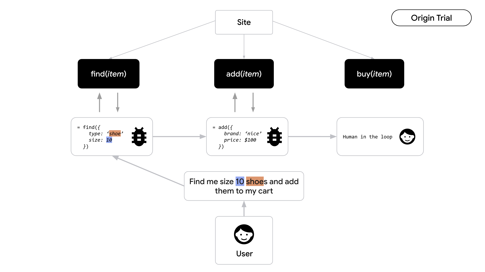
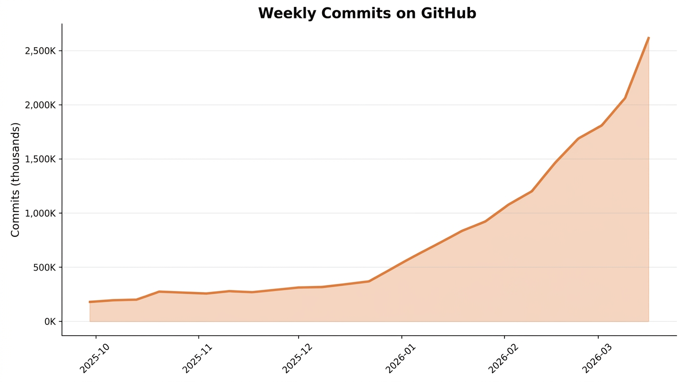
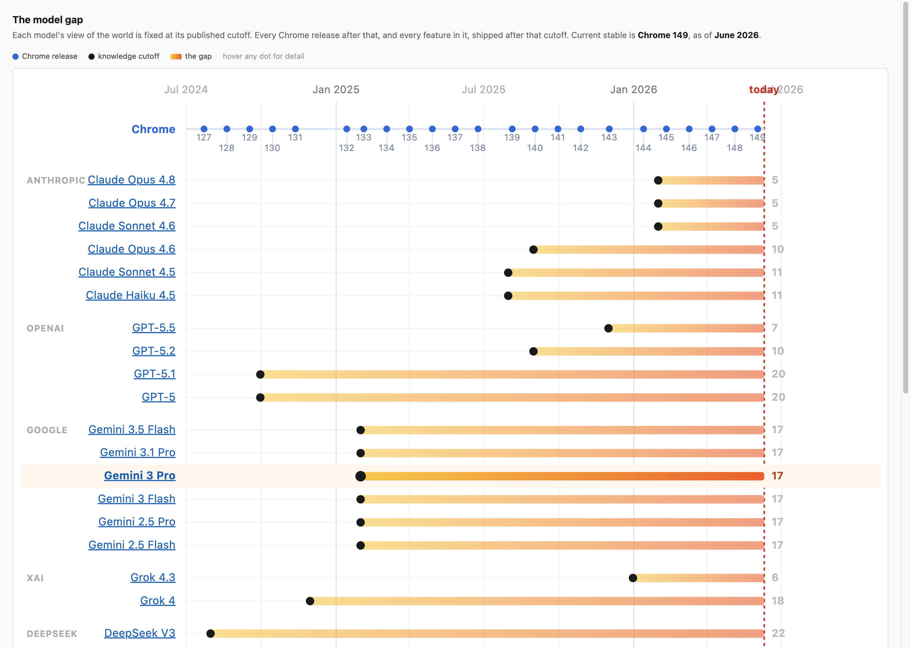
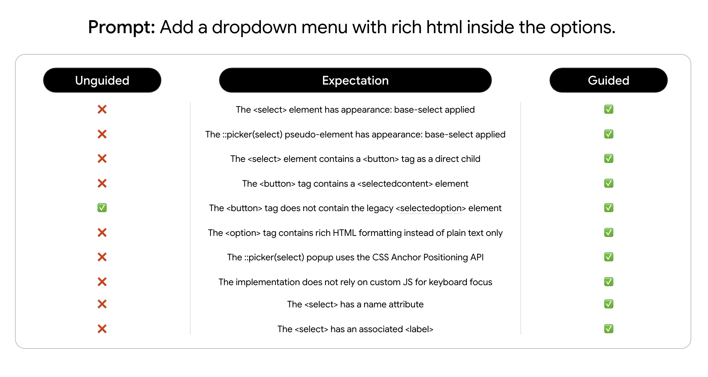

DOM 结构：构建网页的基础树状文档对象模型
DOM structure: the foundational tree hierarchy of the web

WebMCP 交互流程：智能体直接调用网站工具，关键操作由人工确认
WebMCP flow: agents call site tools with human-in-the-loop confirmation
WebMCP：让你的网站成为 AI 智能体可以调用的工具
WebMCP: make your website a tool that AI agents can call

GitHub 每周提交量 — AI 辅助开发正在爆发式增长
Weekly commits on GitHub — AI-assisted development is growing explosively

模型差距：模型的知识停留在训练截止日 — 之后发布的每个 Chrome 特性它都不了解
The model gap: a model's knowledge stops at its cutoff — it misses every Chrome release after
that
在 aifoc.us 查看 · aifoc.us/model-gap

无引导 vs 有引导 — 有了最新的指导，智能体才能写出现代 Web 代码
Unguided vs guided — with up-to-date guidance, agents write modern web code
推荐安装方式：npx modern-web-guidance install
goo.gle/mwg

闭环调试：智能体自行验证每一次修改
Closed-loop debugging: the agent verifies every change it makes